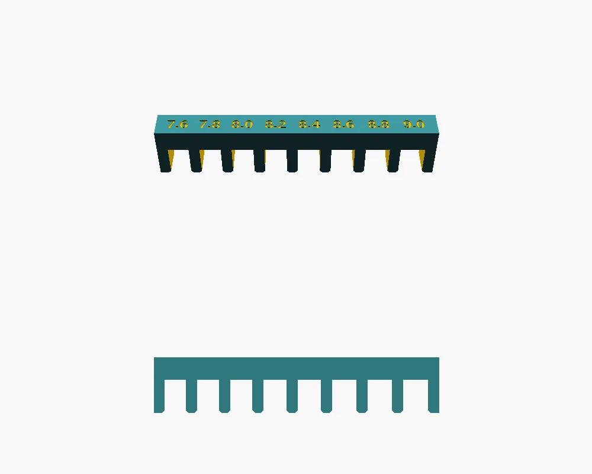
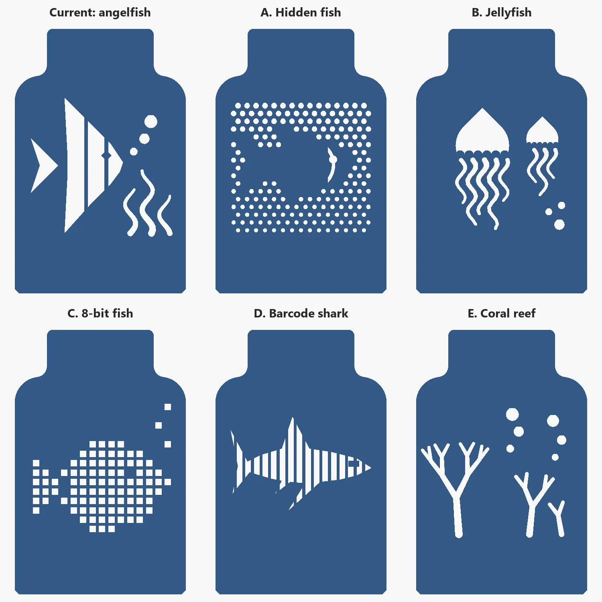
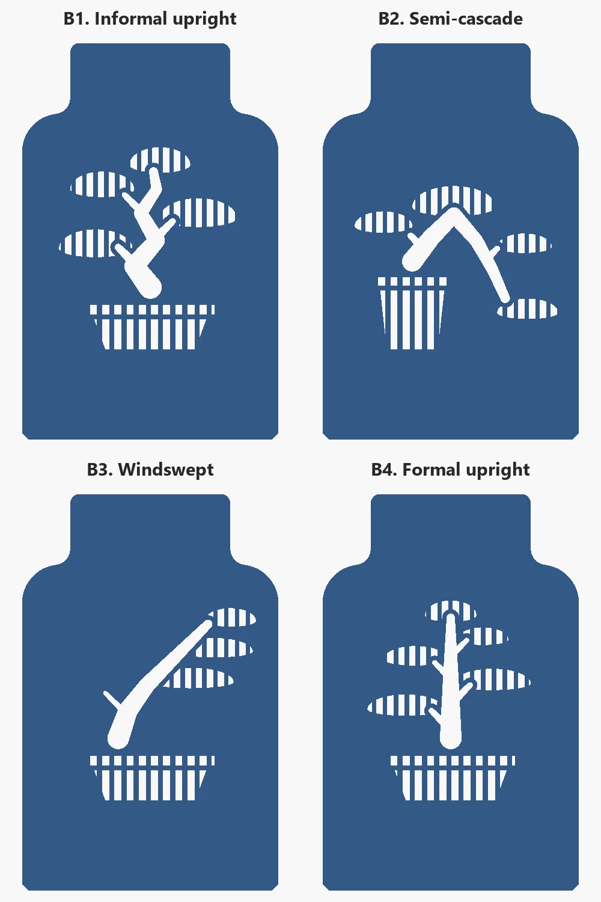
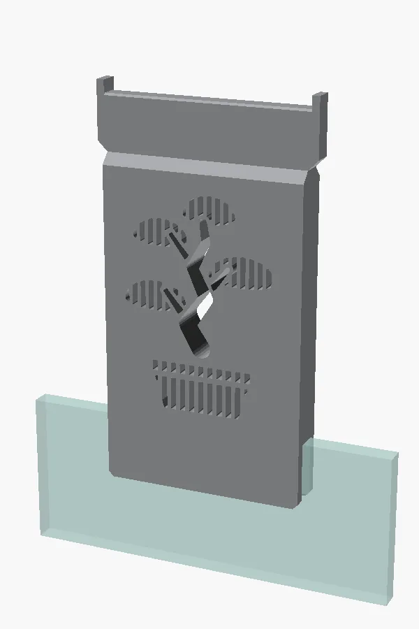
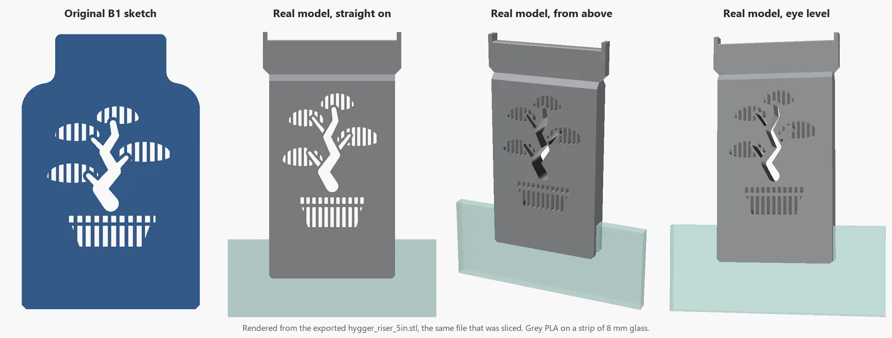
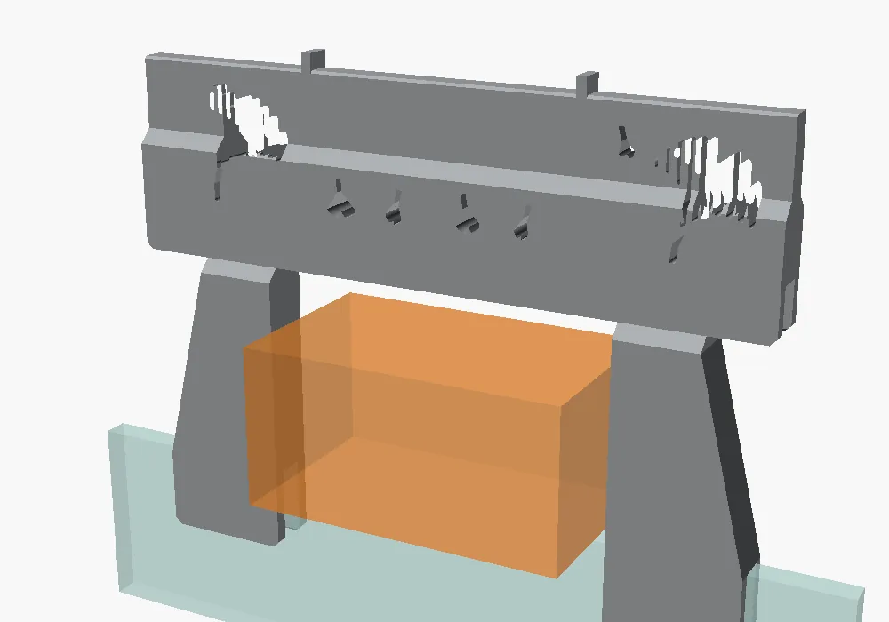
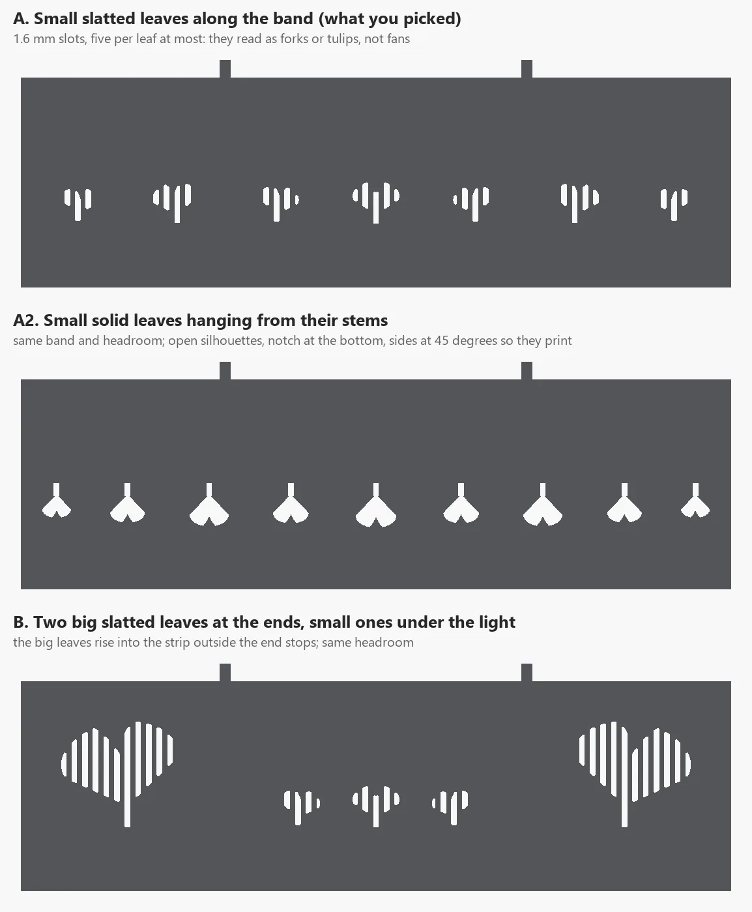
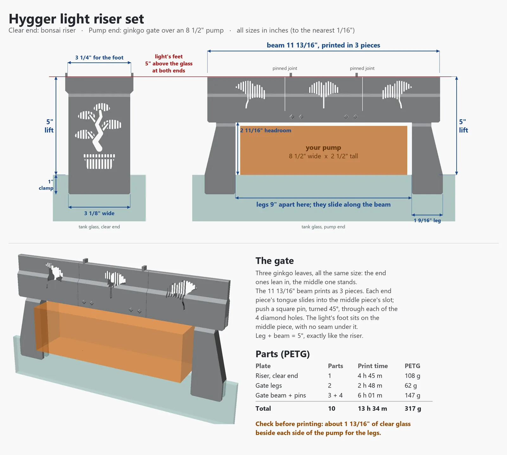

Project one · Riser printed
Risers
The light's brackets sit right on the top edge of the glass, and I wanted the light 5 inches higher. So each end gets something that clamps over the glass and carries a copy of that edge on top, and the light's own bracket sits on it exactly as it sat on the tank. One end has the filter pump in the way. That end gets a gate.

Measuring the glassThe bonsaiTest smallThe pump gateFiles
26 October
First, measure the glass
The AI couldn't measure my tank, and I was doing this without calipers. So the very first print was a measuring tool: a little comb with eight slots, from 7.6 to 9.0 mm wide. Push each slot onto the glass, and the narrowest one that slides on without rocking wins.

A later copy of this harmless little gauge is also the file that nearly drove the nozzle off the edge of the bed. That story is on How it's made.
A blank wall wants a picture
The middle of the riser is just a wall, so it got a picture cut through it. The first ideas were sea creatures.

Then a bonsai, drawn in slats so it reads from across the room. The look has a printing reason behind it: every limb climbs steeper than 45 degrees, and at least 1.4 mm of wall stays between the holes, so the whole thing prints standing up with no supports.



29 and 30 October
Test small, then print big
The riser is a 4 h 45 m print, so two quick test pieces went first, in PLA: just the bottom (the slot and its teeth) and just the top (the cradle that holds the light's 3 1/8-inch foot between two end stops). Both fit the real tank and the real light, so those shapes were locked and haven't changed since.
The full riser printed in PETG on 30 October. It leans in by a few degrees, probably where its 1-inch clamp tooth meets the glass.
The pump gate
The other end of the tank has the filter pump hanging on the glass, so a riser can't clamp there. Instead, two legs clamp on either side of the pump and a beam bridges over it, holding the light's foot at the same 5-inch height. The beam sits on the legs' fins the way the riser sits on the glass.

I asked for the gate before I'd measured the pump. The first beam was 7 7/8 inches, the longest that fits the bed corner to corner. Then I measured: the pump is 8½ inches wide. So the beam grew to 11 13/16 inches and now prints in three pieces. Each end piece's tongue slides into the middle piece's slot and is locked with square pins. The pin holes are diamonds, so they print without supports.
I also asked that the beam couldn't slide off its legs, so the ends of its slot are closed. And for art to match the riser, slatted clouds came first, then ginkgo leaves. The bigger leaves won.


Files
| File | What it is | Print time | Plastic |
|---|---|---|---|
| hygger_riser.scad | The model for both, as OpenSCAD code. part picks riser, test_bottom, test_top, gate_legs, gate_beam or gate | ||
| glass_gauge.scad | The slot gauge, as OpenSCAD code | ||
| hygger_riser_5in.stl | The riser, 5″ lift, with the bonsai (earlier 3″ and 4″ lifts are in the same folder) | ||
| hygger_riser_b1_petg.gcode.3mf | The riser, ready to print, PETG | 4 h 45 m | 108 g |
| hygger_riser_b1_pla.gcode.3mf | The riser, ready to print, PLA | 4 h 04 m | 109 g |
| pump_gate_legs_petg.gcode.3mf | Gate: both legs | 2 h 48 m | 62 g |
| pump_gate_beam_petg.gcode.3mf | Gate: the three beam pieces and their pins | 6 h 04 m | 147 g |
| glass_gauge_petg.gcode.3mf | Slot gauge, PETG (a PLA one is in the same folder) | 38 m | 8 g |
| riser_test_bottom_pla.gcode.3mf | Fit test: the slot and its teeth | 58 m | 27 g |
| riser_test_top_pla.gcode.3mf | Fit test: the cradle for the light's foot | 52 m | 21 g |
The .gcode.3mf files are sliced for a Bambu Lab A1 mini with a 0.4 mm nozzle and the textured PEI plate, and they play no start or finish tune. For any other printer, slice the STL yourself. Sizes on these pages are in inches; the models themselves are in millimetres.
Every picture on this page is a render made from the model files. Photos of the printed parts on the real tank are on their way.